bends
Trajectories that bend
Thus far we have been sticking with monotonically increasing trajectories. This is a good assumption given the amount of data often found, along with the simplicity.
Often we want to see if trajectories are not straight. Development is not simple so our lines should not be.
Need effective strategies for line that bend that also balance trade offs with interpretability and overfitting
Polynomial
Polynomials (quadratic) level 1: \[{Y}_{ti} = \beta_{0i} + \beta_{1i}(Time_{ti} - \bar{X)} + \beta_{2i}(Time_{ti} - \bar{X)}^2 + \varepsilon_{ti}\]
Level 2: \[{\beta}_{0i} = \gamma_{00} + U_{0j}\]
\[{\beta}_{1i} = \gamma_{10} + U_{1j}\] \[{\beta}_{2i} = \gamma_{20} + U_{2i}\]
MLM poly example
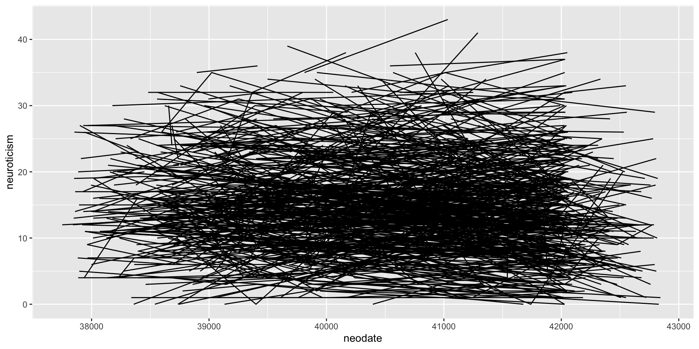
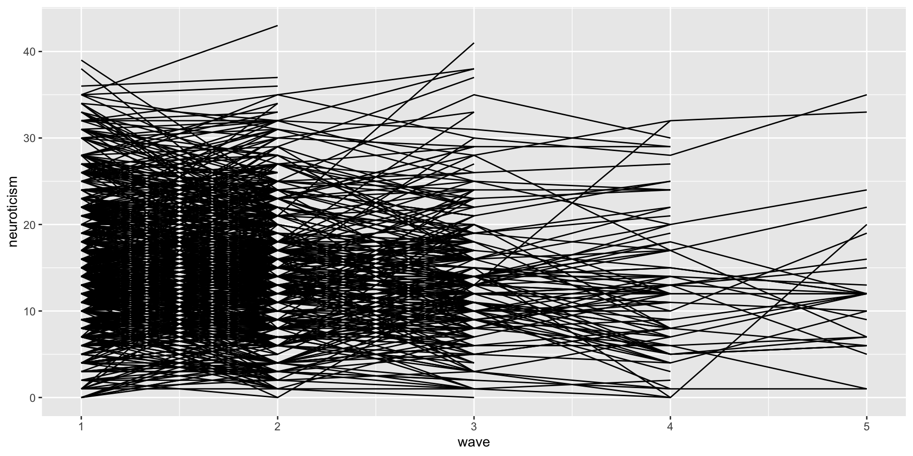
Think about what time means both in terms of your model but how you structure your data.
- What does the intercept mean? How does that impact random effects? Etc…
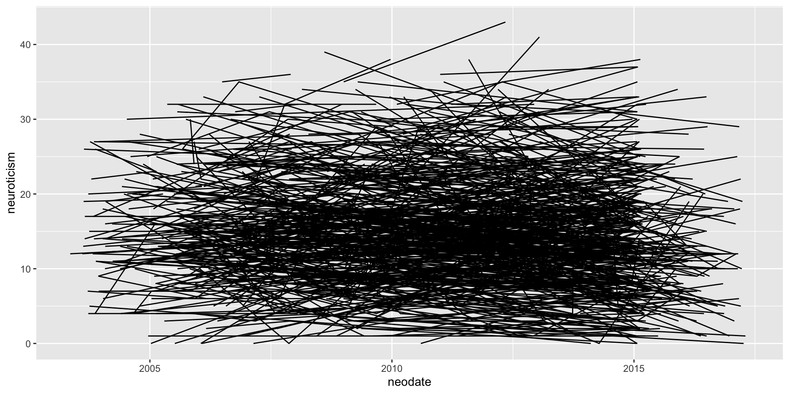
Code
# yes this code could be done more efficiently
personality.wide <- personality %>%
dplyr::select(mapid, wave, neodate) %>%
spread(wave, neodate)
personality.wide$wave_1 <- personality.wide$'1'
personality.wide$wave_2 <- personality.wide$'2'
personality.wide$wave_3 <- personality.wide$'3'
personality.wide$wave_4 <- personality.wide$'4'
personality.wide$wave_5 <- personality.wide$'5'
personality.wide <- personality.wide %>%
mutate (w_1 = (wave_1 - wave_1)/365,
w_2 = (wave_2 - wave_1)/365,
w_3 = (wave_3 - wave_1)/365,
w_4 = (wave_4 - wave_1)/365,
w_5 = (wave_5 - wave_1)/365)
personality.long <- personality.wide %>%
dplyr::select(mapid, w_1:w_5) %>%
gather(wave, year, -mapid) %>%
separate(wave, c('weeks', 'wave' ), sep="_") %>%
dplyr::select(-weeks)
personality.long$wave <- as.numeric(personality.long$wave)
personality <- personality %>%
left_join(personality.long, by = c('mapid', 'wave' ))
personality.s <- personality %>%
group_by(mapid) %>%
tally() %>%
filter(n >=2)
personality <- personality %>%
filter(mapid %in% personality.s$mapid)
personality <- personality %>%
select(-neodate)
personality# A tibble: 1,636 × 10
# Groups: mapid [620]
mapid age neuroticism extraversion openness agreeablness conscientiousness
<int> <int> <int> <int> <int> <int> <int>
1 64228 72 12 32 35 37 34
2 62688 78 12 35 26 26 34
3 10038 79 13 33 19 33 37
4 62689 67 19 17 34 34 24
5 61654 84 26 28 26 28 32
6 12445 90 14 30 18 37 33
7 61639 77 17 35 19 35 30
8 60906 73 7 38 35 31 38
9 61637 73 20 23 25 33 29
10 61225 76 4 42 21 37 37
# ℹ 1,626 more rows
# ℹ 3 more variables: gender <chr>, wave <dbl>, year <drtn>Linear mixed model fit by REML ['lmerMod']
Formula: extraversion ~ year + (year | mapid)
Data: personality
REML criterion at convergence: 9859.5
Scaled residuals:
Min 1Q Median 3Q Max
-5.3629 -0.4324 0.0085 0.4819 4.5266
Random effects:
Groups Name Variance Std.Dev. Corr
mapid (Intercept) 30.30045 5.505
year 0.03647 0.191 0.32
Residual 10.37352 3.221
Number of obs: 1634, groups: mapid, 620
Fixed effects:
Estimate Std. Error t value
(Intercept) 29.85895 0.24827 120.267
year -0.15794 0.02931 -5.389
Correlation of Fixed Effects:
(Intr)
year -0.220Linear mixed model fit by REML ['lmerMod']
Formula: extraversion ~ wave + (wave | mapid)
Data: personality
REML criterion at convergence: 9864.4
Scaled residuals:
Min 1Q Median 3Q Max
-5.2462 -0.4367 0.0081 0.4878 4.4717
Random effects:
Groups Name Variance Std.Dev. Corr
mapid (Intercept) 26.2859 5.1270
wave 0.1295 0.3599 0.81
Residual 10.7746 3.2825
Number of obs: 1635, groups: mapid, 620
Fixed effects:
Estimate Std. Error t value
(Intercept) 30.35681 0.28484 106.575
wave -0.51217 0.09916 -5.165
Correlation of Fixed Effects:
(Intr)
wave -0.532Much smaller random effects; Less variance explained by predictors.
Linear mixed model fit by REML ['lmerMod']
Formula: extraversion ~ age + (age | mapid)
Data: personality
REML criterion at convergence: 7944.1
Scaled residuals:
Min 1Q Median 3Q Max
-5.0884 -0.4363 0.0016 0.4664 2.9655
Random effects:
Groups Name Variance Std.Dev. Corr
mapid (Intercept) 7.8035 2.79348
age 0.0015 0.03874 1.00
Residual 10.0978 3.17770
Number of obs: 1311, groups: mapid, 619
Fixed effects:
Estimate Std. Error t value
(Intercept) 36.53383 1.43716 25.421
age -0.09847 0.02072 -4.753
Correlation of Fixed Effects:
(Intr)
age -0.986
optimizer (nloptwrap) convergence code: 0 (OK)
Model failed to converge with max|grad| = 7.69918 (tol = 0.002, component 1)
See ?lme4::convergence and ?lme4::troubleshooting.
Model is nearly unidentifiable: very large eigenvalue
- Rescale variables?quadratic
I() wont work on difftime objects. Booo
quadratic
Linear mixed model fit by REML ['lmerMod']
Formula: extraversion ~ year + I(year^2) + (1 + year | mapid)
Data: personality
REML criterion at convergence: 9862.4
Scaled residuals:
Min 1Q Median 3Q Max
-5.3351 -0.4397 0.0049 0.4777 4.4871
Random effects:
Groups Name Variance Std.Dev. Corr
mapid (Intercept) 30.41595 5.5151
year 0.03525 0.1878 0.29
Residual 10.35605 3.2181
Number of obs: 1634, groups: mapid, 620
Fixed effects:
Estimate Std. Error t value
(Intercept) 29.965966 0.253474 118.221
year -0.313374 0.077231 -4.058
I(year^2) 0.019067 0.008721 2.186
Correlation of Fixed Effects:
(Intr) year
year -0.265
I(year^2) 0.195 -0.926The importance of centering
- This is an interaction model, where you have a level 1 interaction. As such, centering is important to correctly interpret parameters.
Linear mixed model fit by REML ['lmerMod']
Formula: extraversion ~ year.c + I(year.c^2) + (1 + year.c | mapid)
Data: personality
REML criterion at convergence: 9862.4
Scaled residuals:
Min 1Q Median 3Q Max
-5.3351 -0.4397 0.0049 0.4777 4.4871
Random effects:
Groups Name Variance Std.Dev. Corr
mapid (Intercept) 32.63250 5.7125
year.c 0.03527 0.1878 0.38
Residual 10.35587 3.2181
Number of obs: 1634, groups: mapid, 620
Fixed effects:
Estimate Std. Error t value
(Intercept) 29.177742 0.259875 112.276
year.c -0.195157 0.034015 -5.737
I(year.c^2) 0.019067 0.008721 2.186
Correlation of Fixed Effects:
(Intr) year.c
year.c 0.286
I(year.c^2) -0.340 -0.512graphically, what does this look like?
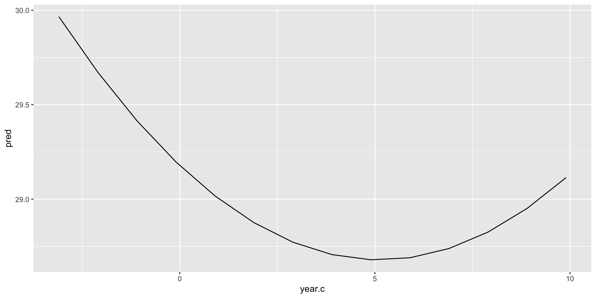
non-centered model
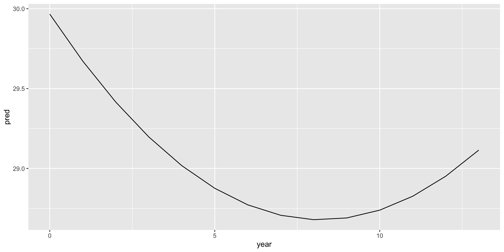
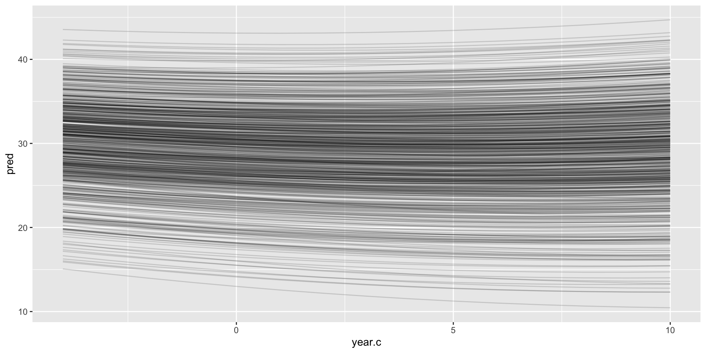
compare with a linear model
Data: personality
Models:
p1: extraversion ~ year + (year | mapid)
p3: extraversion ~ year.c + I(year.c^2) + (1 + year.c | mapid)
npar AIC BIC logLik -2*log(L) Chisq Df Pr(>Chisq)
p1 6 9865.3 9897.7 -4926.7 9853.3
p3 7 9862.6 9900.4 -4924.3 9848.6 4.7373 1 0.02952 *
---
Signif. codes: 0 '***' 0.001 '**' 0.01 '*' 0.05 '.' 0.1 ' ' 1SEM poly example
Code
# A tibble: 82 × 8
id coa male peer cpeer alcuse_14 alcuse_15 alcuse_16
<int> <int> <int> <dbl> <dbl> <dbl> <dbl> <dbl>
1 1 1 0 1.26 0.247 1.73 2 2
2 2 1 1 0.894 -0.124 0 0 1
3 3 1 1 0.894 -0.124 1 2 3.32
4 4 1 1 1.79 0.771 0 2 1.73
5 5 1 0 0.894 -0.124 0 0 0
6 6 1 1 1.55 0.531 3 3 3.16
7 7 1 0 1.55 0.531 1.73 2.45 1
8 8 1 1 0 -1.02 0 0 0
9 9 1 1 0 -1.02 0 1 3.46
10 10 1 0 2 0.982 1 1 1
# ℹ 72 more rowscentering in SEM
Because we control the scaling of time via our constraints we do not need to explicitly center time in the same way we did in the MLM model
lavaan 0.6-19 ended normally after 37 iterations
Estimator ML
Optimization method NLMINB
Number of model parameters 11
Number of equality constraints 2
Number of observations 82
Number of missing patterns 1
Model Test User Model:
Test statistic 0.000
Degrees of freedom 0
Parameter Estimates:
Standard errors Standard
Information Observed
Observed information based on Hessian
Latent Variables:
Estimate Std.Err z-value P(>|z|)
i =~
alcuse_14 1.000
alcuse_15 1.000
alcuse_16 1.000
s =~
alcuse_14 0.000
alcuse_15 2.000
alcuse_16 4.000
q =~
alcuse_14 0.000
alcuse_15 4.000
alcuse_16 16.000
Covariances:
Estimate Std.Err z-value P(>|z|)
i ~~
s 0.110 0.084 1.309 0.191
q -0.034 0.019 -1.786 0.074
s ~~
q 0.007 0.006 1.200 0.230
Intercepts:
Estimate Std.Err z-value P(>|z|)
i 0.630 0.103 6.118 0.000
s 0.198 0.080 2.465 0.014
q -0.016 0.020 -0.799 0.424
Variances:
Estimate Std.Err z-value P(>|z|)
q 0.000
.alcuse_14 (a) 0.335 0.052 6.403 0.000
.alcuse_15 (a) 0.335 0.052 6.403 0.000
.alcuse_16 (a) 0.335 0.052 6.403 0.000
i 0.536 0.146 3.683 0.000
s -0.015 0.046 -0.338 0.735Lets use the personality data from the mlm above. First gotta convert into wide.
Code
personality2 <- read.csv("https://raw.githubusercontent.com/josh-jackson/longitudinal-2022/main/Subject_personality.csv")
p.wide<- personality2 %>%
group_by(mapid) %>%
arrange(neodate) %>%
dplyr::mutate(wave = seq_len(n())) %>%
select(-c(age:neuroticism), -c(openness:gender)) %>%
pivot_wider(names_from = "wave", values_from = "extraversion",names_prefix = "extra_")
p.wide# A tibble: 1,090 × 6
# Groups: mapid [1,090]
mapid extra_1 extra_2 extra_3 extra_4 extra_5
<int> <int> <int> <int> <int> <int>
1 64228 32 34 NA NA NA
2 62688 35 31 35 29 30
3 62685 28 NA NA NA NA
4 10038 33 28 NA NA NA
5 62689 17 18 15 NA NA
6 61654 28 26 NA NA NA
7 12445 30 32 NA NA NA
8 61639 35 27 30 NA NA
9 60906 38 40 32 41 NA
10 61637 23 28 28 14 20
# ℹ 1,080 more rowslavaan 0.6-19 ended normally after 135 iterations
Estimator ML
Optimization method NLMINB
Number of model parameters 14
Number of observations 1090
Number of missing patterns 6
Model Test User Model:
Test statistic 3.742
Degrees of freedom 6
P-value (Chi-square) 0.712
Model Test Baseline Model:
Test statistic 939.752
Degrees of freedom 10
P-value 0.000
User Model versus Baseline Model:
Comparative Fit Index (CFI) 1.000
Tucker-Lewis Index (TLI) 1.004
Robust Comparative Fit Index (CFI) 1.000
Robust Tucker-Lewis Index (TLI) 1.025
Loglikelihood and Information Criteria:
Loglikelihood user model (H0) -6459.688
Loglikelihood unrestricted model (H1) -6457.817
Akaike (AIC) 12947.377
Bayesian (BIC) 13017.292
Sample-size adjusted Bayesian (SABIC) 12972.825
Root Mean Square Error of Approximation:
RMSEA 0.000
90 Percent confidence interval - lower 0.000
90 Percent confidence interval - upper 0.029
P-value H_0: RMSEA <= 0.050 0.999
P-value H_0: RMSEA >= 0.080 0.000
Robust RMSEA 0.000
90 Percent confidence interval - lower 0.000
90 Percent confidence interval - upper 0.150
P-value H_0: Robust RMSEA <= 0.050 0.781
P-value H_0: Robust RMSEA >= 0.080 0.166
Standardized Root Mean Square Residual:
SRMR 0.024
Parameter Estimates:
Standard errors Standard
Information Observed
Observed information based on Hessian
Latent Variables:
Estimate Std.Err z-value P(>|z|) Std.lv Std.all
i =~
extra_1 1.000 5.180 0.820
extra_2 1.000 5.180 0.780
extra_3 1.000 5.180 0.759
extra_4 1.000 5.180 0.734
extra_5 1.000 5.180 0.752
s =~
extra_1 0.000 NA NA
extra_2 1.000 NA NA
extra_3 2.000 NA NA
extra_4 3.000 NA NA
extra_5 4.000 NA NA
q =~
extra_1 0.000 0.000 0.000
extra_2 1.000 0.261 0.039
extra_3 4.000 1.045 0.153
extra_4 9.000 2.351 0.333
extra_5 16.000 4.179 0.607
Covariances:
Estimate Std.Err z-value P(>|z|) Std.lv Std.all
i ~~
s 4.817 3.225 1.494 0.135 1.377 1.377
q -0.904 0.827 -1.093 0.274 -0.668 -0.668
s ~~
q -0.051 0.972 -0.053 0.958 -0.290 -0.290
Intercepts:
Estimate Std.Err z-value P(>|z|) Std.lv Std.all
i 29.405 0.190 154.581 0.000 5.677 5.677
s -0.781 0.225 -3.476 0.001 NA NA
q 0.128 0.080 1.590 0.112 0.489 0.489
Variances:
Estimate Std.Err z-value P(>|z|) Std.lv Std.all
.extra_1 13.055 2.799 4.663 0.000 13.055 0.327
.extra_2 9.982 1.243 8.033 0.000 9.982 0.226
.extra_3 9.300 1.583 5.875 0.000 9.300 0.200
.extra_4 11.696 2.320 5.040 0.000 11.696 0.235
.extra_5 7.360 6.898 1.067 0.286 7.360 0.155
i 26.829 3.095 8.669 0.000 1.000 1.000
s -0.456 3.746 -0.122 0.903 NA NA
q 0.068 0.277 0.246 0.806 1.000 1.000constrain variances
model.6 <- '
i =~ 1*extra_1 + 1*extra_2 + 1*extra_3 + 1*extra_4 + 1*extra_5
s =~ 0*extra_1 + 1*extra_2 + 2*extra_3 + 3*extra_4 + 4*extra_5
q =~ 0*extra_1 + 1*extra_2 + 4*extra_3 + 9*extra_4 + 16*extra_5
extra_1 ~~ Q*extra_1
extra_2 ~~ Q*extra_2
extra_3 ~~ Q*extra_3
extra_4 ~~ Q*extra_4
extra_5 ~~ Q*extra_5
'
p6 <- growth(model.6, data = p.wide, missing = "ML")lavaan 0.6-19 ended normally after 117 iterations
Estimator ML
Optimization method NLMINB
Number of model parameters 14
Number of equality constraints 4
Number of observations 1090
Number of missing patterns 6
Model Test User Model:
Test statistic 7.002
Degrees of freedom 10
P-value (Chi-square) 0.725
Model Test Baseline Model:
Test statistic 939.752
Degrees of freedom 10
P-value 0.000
User Model versus Baseline Model:
Comparative Fit Index (CFI) 1.000
Tucker-Lewis Index (TLI) 1.003
Robust Comparative Fit Index (CFI) 1.000
Robust Tucker-Lewis Index (TLI) 1.026
Loglikelihood and Information Criteria:
Loglikelihood user model (H0) -6461.318
Loglikelihood unrestricted model (H1) -6457.817
Akaike (AIC) 12942.636
Bayesian (BIC) 12992.575
Sample-size adjusted Bayesian (SABIC) 12960.813
Root Mean Square Error of Approximation:
RMSEA 0.000
90 Percent confidence interval - lower 0.000
90 Percent confidence interval - upper 0.024
P-value H_0: RMSEA <= 0.050 1.000
P-value H_0: RMSEA >= 0.080 0.000
Robust RMSEA 0.000
90 Percent confidence interval - lower 0.000
90 Percent confidence interval - upper 0.076
P-value H_0: Robust RMSEA <= 0.050 0.921
P-value H_0: Robust RMSEA >= 0.080 0.046
Standardized Root Mean Square Residual:
SRMR 0.021
Parameter Estimates:
Standard errors Standard
Information Observed
Observed information based on Hessian
Latent Variables:
Estimate Std.Err z-value P(>|z|) Std.lv Std.all
i =~
extra_1 1.000 5.407 0.858
extra_2 1.000 5.407 0.812
extra_3 1.000 5.407 0.787
extra_4 1.000 5.407 0.779
extra_5 1.000 5.407 0.766
s =~
extra_1 0.000 0.000 0.000
extra_2 1.000 1.144 0.172
extra_3 2.000 2.288 0.333
extra_4 3.000 3.432 0.495
extra_5 4.000 4.576 0.648
q =~
extra_1 0.000 0.000 0.000
extra_2 1.000 0.347 0.052
extra_3 4.000 1.387 0.202
extra_4 9.000 3.121 0.450
extra_5 16.000 5.549 0.786
Covariances:
Estimate Std.Err z-value P(>|z|) Std.lv Std.all
i ~~
s 2.316 1.646 1.407 0.159 0.374 0.374
q -0.357 0.516 -0.693 0.489 -0.191 -0.191
s ~~
q -0.381 0.735 -0.518 0.605 -0.959 -0.959
Intercepts:
Estimate Std.Err z-value P(>|z|) Std.lv Std.all
i 29.409 0.190 154.572 0.000 5.439 5.439
s -0.794 0.225 -3.537 0.000 -0.694 -0.694
q 0.132 0.080 1.648 0.099 0.381 0.381
Variances:
Estimate Std.Err z-value P(>|z|) Std.lv Std.all
.extra_1 (Q) 10.482 0.823 12.730 0.000 10.482 0.264
.extra_2 (Q) 10.482 0.823 12.730 0.000 10.482 0.237
.extra_3 (Q) 10.482 0.823 12.730 0.000 10.482 0.222
.extra_4 (Q) 10.482 0.823 12.730 0.000 10.482 0.218
.extra_5 (Q) 10.482 0.823 12.730 0.000 10.482 0.210
i 29.237 1.870 15.635 0.000 1.000 1.000
s 1.309 2.633 0.497 0.619 1.000 1.000
q 0.120 0.216 0.558 0.577 1.000 1.000 extra_1 extra_2 extra_3 extra_4 extra_5
[1,] 32.65393 32.29662 32.04774 31.90729 31.87528
[2,] 32.35908 32.05731 31.75520 31.45275 31.14996
[3,] 28.37174 27.64033 27.19889 27.04742 27.18591
[4,] 30.56915 29.88826 29.52875 29.49065 29.77393
[5,] 19.08634 17.64813 16.79350 16.52247 16.83503
[6,] 27.68981 26.86826 26.39251 26.26255 26.47840Code
as_tibble(lavPredict(p6,type="ov")) %>%
rowid_to_column("ID") %>%
pivot_longer(cols = starts_with("extra"), names_to = c(".value", "wave"), names_sep = "_") %>%
dplyr::mutate(wave = as.numeric(wave)) %>%
ggplot(aes(x = wave, y = extra, group = ID, color = factor(ID))) +
geom_line(alpha = .2) + theme(legend.position = "none") 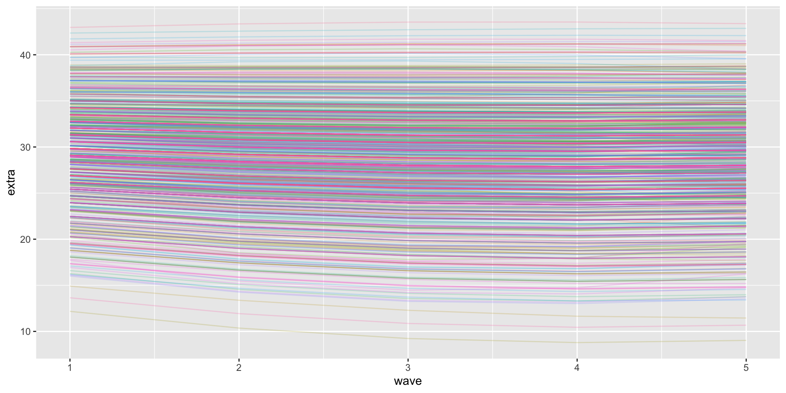
SEM latent basis
Let the model decide the loadings, much as we would do with normal CFAs.
T1 Loading: 0 (Fixed - Baseline)
T2 Loading: 0.75 (Estimated) “75% of the total change happened in the first year
T3 Loading: 0.90 (Estimated) “By year 3, 90% of the total change occurred.
T4 Loading: 1.0 (Fixed - End)
SEM latent basis
lavaan 0.6-19 ended normally after 184 iterations
Estimator ML
Optimization method NLMINB
Number of model parameters 13
Number of observations 1090
Number of missing patterns 6
Model Test User Model:
Test statistic 3.688
Degrees of freedom 7
P-value (Chi-square) 0.815
Model Test Baseline Model:
Test statistic 939.752
Degrees of freedom 10
P-value 0.000
User Model versus Baseline Model:
Comparative Fit Index (CFI) 1.000
Tucker-Lewis Index (TLI) 1.005
Robust Comparative Fit Index (CFI) 1.000
Robust Tucker-Lewis Index (TLI) 1.032
Loglikelihood and Information Criteria:
Loglikelihood user model (H0) -6459.661
Loglikelihood unrestricted model (H1) -6457.817
Akaike (AIC) 12945.323
Bayesian (BIC) 13010.244
Sample-size adjusted Bayesian (SABIC) 12968.953
Root Mean Square Error of Approximation:
RMSEA 0.000
90 Percent confidence interval - lower 0.000
90 Percent confidence interval - upper 0.023
P-value H_0: RMSEA <= 0.050 1.000
P-value H_0: RMSEA >= 0.080 0.000
Robust RMSEA 0.000
90 Percent confidence interval - lower 0.000
90 Percent confidence interval - upper 0.123
P-value H_0: Robust RMSEA <= 0.050 0.858
P-value H_0: Robust RMSEA >= 0.080 0.103
Standardized Root Mean Square Residual:
SRMR 0.033
Parameter Estimates:
Standard errors Standard
Information Observed
Observed information based on Hessian
Latent Variables:
Estimate Std.Err z-value P(>|z|) Std.lv Std.all
i =~
extra_1 1.000 5.281 0.837
extra_2 1.000 5.281 0.792
extra_3 1.000 5.281 0.781
extra_4 1.000 5.281 0.753
extra_5 1.000 5.281 0.726
s =~
extra_1 0.000 0.000 0.000
extra_2 0.473 0.247 1.914 0.056 0.366 0.055
extra_3 0.668 0.343 1.946 0.052 0.516 0.076
extra_4 0.686 0.428 1.605 0.108 0.531 0.076
extra_5 1.000 0.773 0.106
Covariances:
Estimate Std.Err z-value P(>|z|) Std.lv Std.all
i ~~
s 6.517 4.281 1.522 0.128 1.596 1.596
Intercepts:
Estimate Std.Err z-value P(>|z|) Std.lv Std.all
i 29.423 0.191 154.034 0.000 5.571 5.571
s -1.542 0.787 -1.960 0.050 -1.995 -1.995
Variances:
Estimate Std.Err z-value P(>|z|) Std.lv Std.all
.extra_1 11.965 2.674 4.474 0.000 11.965 0.300
.extra_2 10.299 1.219 8.447 0.000 10.299 0.231
.extra_3 8.893 1.334 6.667 0.000 8.893 0.194
.extra_4 12.090 2.246 5.384 0.000 12.090 0.246
.extra_5 11.454 4.373 2.619 0.009 11.454 0.216
i 27.891 3.054 9.134 0.000 1.000 1.000
s 0.598 8.053 0.074 0.941 1.000 1.000Code
as_tibble(lavPredict(p7,type="ov")) %>%
rowid_to_column("ID") %>%
pivot_longer(cols = starts_with("extra"), names_to = c(".value", "wave"), names_sep = "_") %>%
dplyr::mutate(wave = as.numeric(wave)) %>%
ggplot(aes(x = wave, y = extra, group = ID, color = factor(ID))) +
geom_line(alpha = .2) + theme(legend.position = "none") 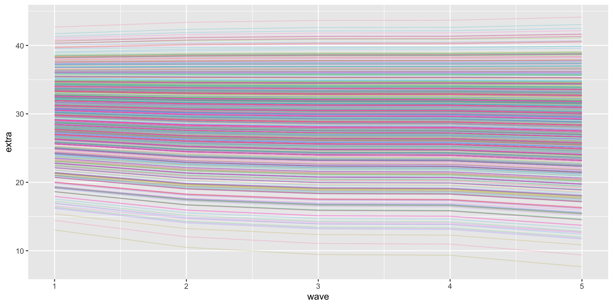
With three repeated assessments you will have a just identified model and thus cannot look at fit stats. It is more descriptive.
Slope variance describes variance in total change. Note that the latent basis shape is assumed to fit for everyone! I.e. proportion of total change inbetween 1 and 2 must be the same for everyone, even if you are going up vs down
Piecewise
Fit more than 1 trajectory
Best to use when we have a reason for a qualitative difference at a time point. For example, before your health event you may have a different trajectory than after
Time modeled as dummy variables that represent different segments
The point of separation is called a knot. You can have as many as you want and these can be pre-specified or let the data specify
two-rate specification
- The easiest example is to take your time variable and transform it into a Time1 and time2, that represent the different time periods
# A tibble: 2 × 7
time t0 t1 t2 t3 t4 t5
<chr> <dbl> <dbl> <dbl> <dbl> <dbl> <dbl>
1 time 1 0 1 2 2 2 2
2 time 2 0 0 0 1 2 3- Once you hit the knot your value stays the same. For the second curve, until you get to knot you don’t have a trajectory.
incremental curves
- Here the first trajectory keeps going, whereas the second trajectory starts at the position of the knot.
- The two coding schemes propose the same type of trajectory, the difference is in interpretation.
- In the first, the two slope coefficients represent the actual slope in the respective time period.
- In the second, the coefficient for time 2 represents the deviation from the slope in period 1.
Code
text <-
tibble(exper = c(5, 5, 0.5, 0.5, 1),
lnw = c(2.24, 2.2, 2, 1.96, 1.62),
label = c("Slope~differential",
"Pre-Post~knot~(gamma[2][italic(i)])",
"Rate~of~change",
"Pre~knot~(gamma[1][italic(i)])",
"DV~at~time~0(gamma[0][italic(i)])"),
hjust = c(.5, .5, 0, 0, 0))
arrow <-
tibble(exper = c(5.2, 1.7, 1.7),
xend = c(9.1, 1.7, 0.05),
lnw = c(2.18, 1.93, 1.64),
yend = c(2.15, 1.84, 1.74))
tibble(exper = c(0, 3, 3, 10),
ged = rep(0:1, each = 2)) %>%
tidyr::expand(model = letters[1:2],
nesting(exper, ged)) %>%
mutate(postexp = ifelse(exper == 10, 1, 0)) %>%
mutate(lnw = case_when(
model == "a" ~ 1.75 + 0.04 * exper,
model == "b" ~ 1.75 + 0.04 * exper + 0.15 * postexp),
model = fct_rev(model)) %>%
plot(aes(x = exper, y = lnw)) +
annotate(geom = "curve",
x = 8.5, xend = 8.8,
y = 2.195, yend = 2.109,
arrow = arrow(length = unit(0.05, "inches"), type = "closed", ends = "both"),
size = 1/4, linetype = 2, curvature = -0.85)+ xlab("time") +ylab("DV")NULL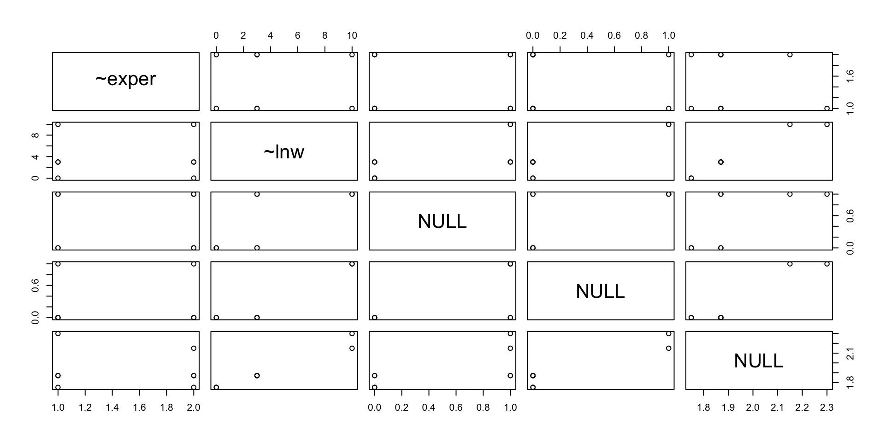
mlm example
level 1:
\[{Y}_{ti} = \beta_{0i} + \beta_{1i}Time1_{ti} + \beta_{2i}Time2_{ti} + \varepsilon_{ti}\]
Level 2: \[{\beta}_{0i} = \gamma_{00} + U_{0i}\]
\[{\beta}_{1i} = \gamma_{10} + U_{1i}\] \[{\beta}_{2i} = \gamma_{20} + U_{2i}\]
0 1 2 2 2
0 0 0 1 2
Linear mixed model fit by REML ['lmerMod']
Formula: extraversion ~ time1 + time2 + (time2 | mapid)
Data: personality
REML criterion at convergence: 9869.9
Scaled residuals:
Min 1Q Median 3Q Max
-5.4177 -0.4572 0.0143 0.4976 4.4418
Random effects:
Groups Name Variance Std.Dev. Corr
mapid (Intercept) 31.9783 5.6549
time2 0.7177 0.8472 0.26
Residual 10.8065 3.2873
Number of obs: 1635, groups: mapid, 620
Fixed effects:
Estimate Std. Error t value
(Intercept) 29.89139 0.25838 115.687
time1 -0.58856 0.12085 -4.870
time2 -0.07393 0.30424 -0.243
Correlation of Fixed Effects:
(Intr) time1
time1 -0.342
time2 0.070 -0.2900 1 3 4 5 (Wave)
0 0 0 1 2 (same as time 2 previously)
Linear mixed model fit by REML ['lmerMod']
Formula: extraversion ~ wave + time2 + (time2 | mapid)
Data: personality
REML criterion at convergence: 9869.9
Scaled residuals:
Min 1Q Median 3Q Max
-5.4177 -0.4572 0.0143 0.4976 4.4418
Random effects:
Groups Name Variance Std.Dev. Corr
mapid (Intercept) 31.9783 5.6549
time2 0.7177 0.8472 0.26
Residual 10.8065 3.2873
Number of obs: 1635, groups: mapid, 620
Fixed effects:
Estimate Std. Error t value
(Intercept) 30.4799 0.3205 95.099
wave -0.5886 0.1209 -4.870
time2 0.5146 0.3584 1.436
Correlation of Fixed Effects:
(Intr) wave
wave -0.653
time2 0.361 -0.583SEM example
0 1 2 2 2
0 0 0 1 2
lavaan 0.6-19 ended normally after 141 iterations
Estimator ML
Optimization method NLMINB
Number of model parameters 14
Number of observations 1090
Number of missing patterns 6
Model Test User Model:
Test statistic 4.756
Degrees of freedom 6
P-value (Chi-square) 0.575
Model Test Baseline Model:
Test statistic 939.752
Degrees of freedom 10
P-value 0.000
User Model versus Baseline Model:
Comparative Fit Index (CFI) 1.000
Tucker-Lewis Index (TLI) 1.002
Robust Comparative Fit Index (CFI) 1.000
Robust Tucker-Lewis Index (TLI) 1.027
Loglikelihood and Information Criteria:
Loglikelihood user model (H0) -6460.195
Loglikelihood unrestricted model (H1) -6457.817
Akaike (AIC) 12948.391
Bayesian (BIC) 13018.306
Sample-size adjusted Bayesian (SABIC) 12973.839
Root Mean Square Error of Approximation:
RMSEA 0.000
90 Percent confidence interval - lower 0.000
90 Percent confidence interval - upper 0.034
P-value H_0: RMSEA <= 0.050 0.997
P-value H_0: RMSEA >= 0.080 0.000
Robust RMSEA 0.000
90 Percent confidence interval - lower 0.000
90 Percent confidence interval - upper 0.148
P-value H_0: Robust RMSEA <= 0.050 0.794
P-value H_0: Robust RMSEA >= 0.080 0.156
Standardized Root Mean Square Residual:
SRMR 0.021
Parameter Estimates:
Standard errors Standard
Information Observed
Observed information based on Hessian
Latent Variables:
Estimate Std.Err z-value P(>|z|) Std.lv Std.all
i =~
extra_1 1.000 5.328 0.844
extra_2 1.000 5.328 0.803
extra_3 1.000 5.328 0.777
extra_4 1.000 5.328 0.760
extra_5 1.000 5.328 0.768
s1 =~
extra_1 0.000 0.000 0.000
extra_2 1.000 0.616 0.093
extra_3 2.000 1.231 0.180
extra_4 2.000 1.231 0.176
extra_5 2.000 1.231 0.177
s2 =~
extra_1 0.000 0.000 0.000
extra_2 0.000 0.000 0.000
extra_3 0.000 0.000 0.000
extra_4 1.000 1.396 0.199
extra_5 2.000 2.793 0.402
Covariances:
Estimate Std.Err z-value P(>|z|) Std.lv Std.all
i ~~
s1 2.278 1.301 1.750 0.080 0.694 0.694
s2 -0.202 1.952 -0.103 0.918 -0.027 -0.027
s1 ~~
s2 -0.686 1.175 -0.584 0.559 -0.798 -0.798
Intercepts:
Estimate Std.Err z-value P(>|z|) Std.lv Std.all
i 29.381 0.189 155.420 0.000 5.514 5.514
s1 -0.536 0.121 -4.443 0.000 -0.871 -0.871
s2 -0.087 0.332 -0.262 0.793 -0.062 -0.062
Variances:
Estimate Std.Err z-value P(>|z|) Std.lv Std.all
.extra_1 11.486 1.886 6.090 0.000 11.486 0.288
.extra_2 10.735 1.145 9.379 0.000 10.735 0.244
.extra_3 7.957 2.241 3.551 0.000 7.957 0.169
.extra_4 11.353 2.344 4.844 0.000 11.353 0.231
.extra_5 7.633 5.576 1.369 0.171 7.633 0.159
i 28.390 2.293 12.382 0.000 1.000 1.000
s1 0.379 1.057 0.359 0.720 1.000 1.000
s2 1.950 2.305 0.846 0.398 1.000 1.0000 1 2 3 4
0 0 0 1 2
lavaan 0.6-19 ended normally after 150 iterations
Estimator ML
Optimization method NLMINB
Number of model parameters 14
Number of observations 1090
Number of missing patterns 6
Model Test User Model:
Test statistic 4.756
Degrees of freedom 6
P-value (Chi-square) 0.575
Model Test Baseline Model:
Test statistic 939.752
Degrees of freedom 10
P-value 0.000
User Model versus Baseline Model:
Comparative Fit Index (CFI) 1.000
Tucker-Lewis Index (TLI) 1.002
Robust Comparative Fit Index (CFI) 1.000
Robust Tucker-Lewis Index (TLI) 1.027
Loglikelihood and Information Criteria:
Loglikelihood user model (H0) -6460.195
Loglikelihood unrestricted model (H1) -6457.817
Akaike (AIC) 12948.391
Bayesian (BIC) 13018.306
Sample-size adjusted Bayesian (SABIC) 12973.839
Root Mean Square Error of Approximation:
RMSEA 0.000
90 Percent confidence interval - lower 0.000
90 Percent confidence interval - upper 0.034
P-value H_0: RMSEA <= 0.050 0.997
P-value H_0: RMSEA >= 0.080 0.000
Robust RMSEA 0.000
90 Percent confidence interval - lower 0.000
90 Percent confidence interval - upper 0.148
P-value H_0: Robust RMSEA <= 0.050 0.794
P-value H_0: Robust RMSEA >= 0.080 0.156
Standardized Root Mean Square Residual:
SRMR 0.021
Parameter Estimates:
Standard errors Standard
Information Observed
Observed information based on Hessian
Latent Variables:
Estimate Std.Err z-value P(>|z|) Std.lv Std.all
i =~
extra_1 1.000 5.328 0.844
extra_2 1.000 5.328 0.803
extra_3 1.000 5.328 0.777
extra_4 1.000 5.328 0.760
extra_5 1.000 5.328 0.768
s1 =~
extra_1 0.000 0.000 0.000
extra_2 1.000 0.616 0.093
extra_3 2.000 1.231 0.180
extra_4 3.000 1.847 0.263
extra_5 4.000 2.463 0.355
s2 =~
extra_1 0.000 0.000 0.000
extra_2 0.000 0.000 0.000
extra_3 0.000 0.000 0.000
extra_4 1.000 1.924 0.274
extra_5 2.000 3.848 0.555
Covariances:
Estimate Std.Err z-value P(>|z|) Std.lv Std.all
i ~~
s1 2.278 1.301 1.750 0.080 0.694 0.694
s2 -2.479 2.723 -0.911 0.363 -0.242 -0.242
s1 ~~
s2 -1.065 2.080 -0.512 0.609 -0.899 -0.899
Intercepts:
Estimate Std.Err z-value P(>|z|) Std.lv Std.all
i 29.381 0.189 155.420 0.000 5.514 5.514
s1 -0.536 0.121 -4.443 0.000 -0.871 -0.871
s2 0.449 0.383 1.173 0.241 0.233 0.233
Variances:
Estimate Std.Err z-value P(>|z|) Std.lv Std.all
.extra_1 11.486 1.886 6.090 0.000 11.486 0.288
.extra_2 10.735 1.145 9.379 0.000 10.735 0.244
.extra_3 7.957 2.241 3.551 0.000 7.957 0.169
.extra_4 11.353 2.344 4.844 0.000 11.353 0.231
.extra_5 7.633 5.576 1.369 0.171 7.633 0.159
i 28.390 2.293 12.382 0.000 1.000 1.000
s1 0.379 1.057 0.359 0.720 1.000 1.000
s2 3.702 5.088 0.728 0.467 1.000 1.000Code
as_tibble(lavPredict(p9,type="ov")) %>%
rowid_to_column("ID") %>%
pivot_longer(cols = starts_with("extra"), names_to = c(".value", "wave"), names_sep = "_") %>%
dplyr::mutate(wave = as.numeric(wave)) %>%
ggplot(aes(x = wave, y = extra, group = ID, color = factor(ID))) +
geom_line(alpha = .2) + theme(legend.position = "none") 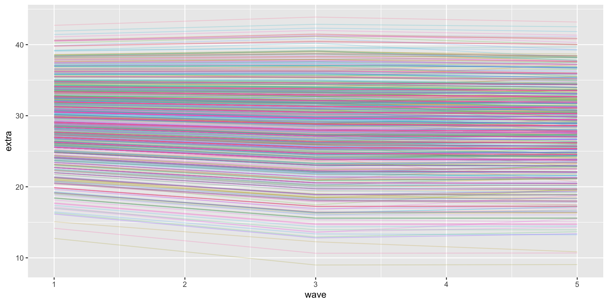
different model, same figure?
Code
as_tibble(lavPredict(p8,type="ov")) %>%
rowid_to_column("ID") %>%
pivot_longer(cols = starts_with("extra"), names_to = c(".value", "wave"), names_sep = "_") %>%
dplyr::mutate(wave = as.numeric(wave)) %>%
ggplot(aes(x = wave, y = extra, group = ID, color = factor(ID))) +
geom_line(alpha = .2) + theme(legend.position = "none") polynomial piecewise
\[{Y}_{ti} = \beta_{0i} + \beta_{1i}Time1_{ti} + \beta_{2i}Time1_{ti}^2 + \beta_{3i}Time2_{ti} + \varepsilon_{ti}\]
Level 2: \[{\beta}_{0i} = \gamma_{00} + U_{0i}\]
\[{\beta}_{1i} = \gamma_{10} + U_{1i}\] \[{\beta}_{2i} = \gamma_{20} + U_{2i}\] \[{\beta}_{3i} = \gamma_{30} + U_{3i}\]
you really should have more waves per piece to model piecewise polynomial, but hey lets try it:
Code
two.rate.poly <- 'i =~ 1*extra_1 + 1*extra_2 + 1*extra_3 + 1*extra_4 + 1*extra_5
s1 =~ -2*extra_1 + -1*extra_2 + 0*extra_3 + 0*extra_4 + 0*extra_5
s2 =~ 0*extra_1 + 0*extra_2 + 0*extra_3 + 1*extra_4 + 2*extra_5
s2poly =~ 0*extra_1 + 0*extra_2 + 0*extra_3 + 1*extra_4 + 4*extra_5
extra_1 ~~ Q*extra_1
extra_2 ~~ Q*extra_2
extra_3 ~~ Q*extra_3
extra_4 ~~ Q*extra_4
extra_5 ~~ Q*extra_5
s2poly~~0*s2poly
'
p9 <- growth(two.rate.poly, data = p.wide, missing = "ML")lavaan 0.6-19 ended normally after 150 iterations
Estimator ML
Optimization method NLMINB
Number of model parameters 18
Number of equality constraints 4
Number of observations 1090
Number of missing patterns 6
Model Test User Model:
Test statistic 7.609
Degrees of freedom 6
P-value (Chi-square) 0.268
Parameter Estimates:
Standard errors Standard
Information Observed
Observed information based on Hessian
Latent Variables:
Estimate Std.Err z-value P(>|z|)
i =~
extra_1 1.000
extra_2 1.000
extra_3 1.000
extra_4 1.000
extra_5 1.000
s1 =~
extra_1 -2.000
extra_2 -1.000
extra_3 0.000
extra_4 0.000
extra_5 0.000
s2 =~
extra_1 0.000
extra_2 0.000
extra_3 0.000
extra_4 1.000
extra_5 2.000
s2poly =~
extra_1 0.000
extra_2 0.000
extra_3 0.000
extra_4 1.000
extra_5 4.000
Covariances:
Estimate Std.Err z-value P(>|z|)
i ~~
s1 1.865 1.128 1.654 0.098
s2 -1.827 5.897 -0.310 0.757
s2poly 1.135 3.266 0.347 0.728
s1 ~~
s2 -0.449 2.026 -0.222 0.825
s2poly 0.390 1.061 0.367 0.713
s2 ~~
s2poly -0.599 1.278 -0.469 0.639
Intercepts:
Estimate Std.Err z-value P(>|z|)
i 28.285 0.279 101.525 0.000
s1 -0.550 0.121 -4.528 0.000
s2 0.282 0.876 0.322 0.747
s2poly -0.240 0.512 -0.468 0.640
Variances:
Estimate Std.Err z-value P(>|z|)
.extra_1 (Q) 10.938 0.725 15.087 0.000
.extra_2 (Q) 10.938 0.725 15.087 0.000
.extra_3 (Q) 10.938 0.725 15.087 0.000
.extra_4 (Q) 10.938 0.725 15.087 0.000
.extra_5 (Q) 10.938 0.725 15.087 0.000
s2poly 0.000
i 36.953 3.207 11.521 0.000
s1 -0.171 0.659 -0.260 0.795
s2 2.396 5.275 0.454 0.650Code
as_tibble(lavPredict(p9,type="ov")) %>%
rowid_to_column("ID") %>%
pivot_longer(cols = starts_with("extra"), names_to = c(".value", "wave"), names_sep = "_") %>%
dplyr::mutate(wave = as.numeric(wave)) %>%
ggplot(aes(x = wave, y = extra, group = ID, color = factor(ID))) +
geom_line(alpha = .2) + theme(legend.position = "none") 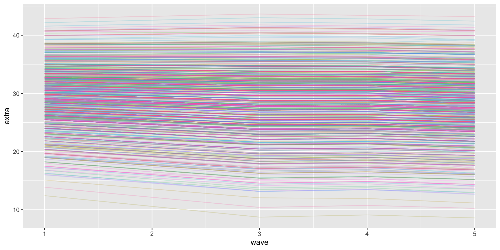
Discontinuity in level
- The previous models modified time, and thus the trajectory. But level 1 predictors also modify the trajectory.
Code
library(tidyverse)
plot <- function(data,
mapping,
sizes = c(1, 1/4),
linetypes = c(1, 2),
...) {
ggplot(data, mapping) +
geom_line(aes(size = model, linetype = model)) +
geom_text(data = text,
aes(label = label, hjust = hjust),
size = 3, parse = T) +
geom_segment(data = arrow,
aes(xend = xend, yend = yend),
arrow = arrow(length = unit(0.075, "inches"), type = "closed"),
size = 1/4) +
scale_size_manual(values = sizes) +
scale_linetype_manual(values = linetypes) +
scale_x_continuous(expand = expansion(mult = c(0, 0.05))) +
scale_y_continuous(breaks = 0:4 * 0.2 + 1.6, expand = c(0, 0)) +
coord_cartesian(ylim = c(1.6, 2.4)) +
theme(legend.position = "none",
panel.grid = element_blank())
}
text <-
tibble(exper = c(4.5, 4.5, 7.5, 7.5, 1),
lnw = c(2.24, 2.2, 1.82, 1.78, 1.62),
label = c("Common~rate~of~change",
"Pre-Post~L1~Event~(gamma[1][italic(i)])",
"Elevation~differential",
"on~level~1~IV~(gamma[2][italic(i)])",
"DV~at~time~zero~(gamma[0][italic(i)])"),
hjust = c(.5, .5, .5, .5, 0))
arrow <-
tibble(exper = c(2.85, 5.2, 5.5, 1.7),
xend = c(2, 6.8, 3.1, 0.05),
lnw = c(2.18, 2.18, 1.8, 1.64),
yend = c(1.84, 2.08, 1.9, 1.74))
p1 <-
tibble(exper = c(0, 3, 3, 10),
ged = rep(0:1, each = 2)) %>%
tidyr::expand(model = letters[1:2],
nesting(exper, ged)) %>%
mutate(exper2 = if_else(ged == 0, 0, exper - 3)) %>%
mutate(lnw = case_when(
model == "a" ~ 1.75 + 0.04 * exper,
model == "b" ~ 1.75 + 0.04 * exper + 0.05 * ged),
model = fct_rev(model)) %>%
plot(aes(x = exper, y = lnw))+ xlab("time") +ylab("DV")
p1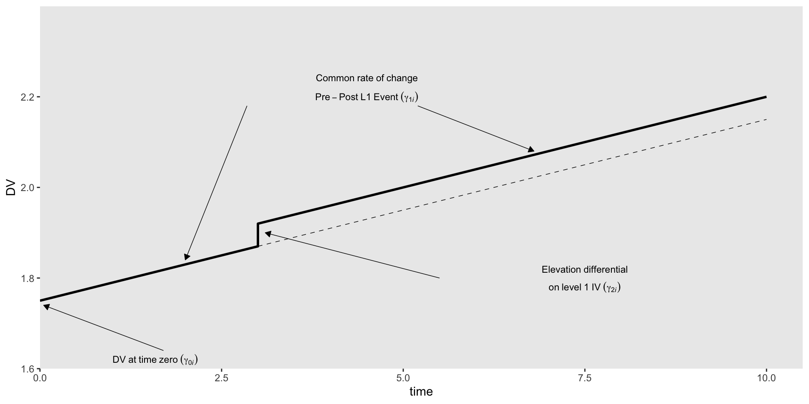
level 1:
\[{Y}_{ti} = \beta_{0i} + \beta_{1i}Time_{ti} + \beta_{2i}Switch_{ti} + \varepsilon_{ti}\]
Level 2: \[{\beta}_{0i} = \gamma_{00} + U_{0i}\]
\[{\beta}_{1i} = \gamma_{10} + U_{1i}\] \[{\beta}_{2i} = \gamma_{20} + U_{2i}\]
Discontinuity in Level and Slope
level 1:
\[{Y}_{ti} = \beta_{0i} + \beta_{1i}Time1_{ti} + \beta_{2i}Switch_{ti} + \beta_{3i}Time2_{ti} + \varepsilon_{ti}\]
Level 2: \[{\beta}_{0i} = \gamma_{00} + U_{0i}\]
\[{\beta}_{1i} = \gamma_{10} + U_{1i}\] \[{\beta}_{2i} = \gamma_{20} + U_{2i}\] \[{\beta}_{3i} = \gamma_{20} + U_{2i}\]
Same time trends as two rate specification, but add a switch
t3 <- tribble(
~time, ~t0,~t1,~t2,~t3,~t4,~t5,~t6,
"time 1", 0,1,2,3,3,3,3,
"transition", 0,0, 0,1,1,1,1,
"time 2", 0, 0,0,0,1,2,3
)
t3# A tibble: 3 × 8
time t0 t1 t2 t3 t4 t5 t6
<chr> <dbl> <dbl> <dbl> <dbl> <dbl> <dbl> <dbl>
1 time 1 0 1 2 3 3 3 3
2 transition 0 0 0 1 1 1 1
3 time 2 0 0 0 0 1 2 3Three-Phase Piecewise Model
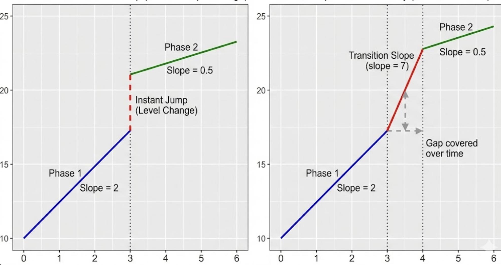
Same model as before, just time is coded differently. You effectively have two knots, and then connect the knots. One knot is the end of the first trajectory, whereas the second is the start of the other trajectory.
Useful for events that are assessed at wave 4 that occurred prior to the assessment, sometime between wave 3 and 4. As a result, the instant change may not be appropriate as you do not want to attribute the change from the event to one of the slopes. This allows some wiggle room.
knot between w3 and w4.
t4 <- tribble(
~time, ~t0,~t1,~t2,~t3,~t4,~t5,~t6,
"time 1", 0,1,2,3,3,3,3,
"transition", 0,0, 0,0,1,1,1,
"time 2", 0, 0,0,0,0,1,2
)
t4# A tibble: 3 × 8
time t0 t1 t2 t3 t4 t5 t6
<chr> <dbl> <dbl> <dbl> <dbl> <dbl> <dbl> <dbl>
1 time 1 0 1 2 3 3 3 3
2 transition 0 0 0 0 1 1 1
3 time 2 0 0 0 0 0 1 2Generalized growth curves
Often times your DV is not assumed to be governed by a normal data generating process. For example, we are working with count variables, or with dichotomous variables.
Just like with regression, you would fit different response distribution (binomial, poisson, beta, etc) and then use a link function to create a linear formula.
These same techniques can be applied to MLMs and thus longitudinal MLMs.
\[y_i \sim \operatorname{Bernoulli}(p_i)\] Logistic function: \[P(Y=1) = \frac{1}{1 + e^{-b_0 + b_1X}}\] Logit link: \[\ln\left(\frac{p}{1-p}\right) = \beta_0 + \beta_1X\]
\[y_{ij} \sim \operatorname{Bernoulli}(p_{ij}) \\\] \[\operatorname{logit}(p_{ij}) = \gamma_{00} + \gamma_{10} \text{time}_{ij} + [\text{U}_{0j} + \text{U}_{1j} \text{time}_{ij}]\]
Code
dog t0 t1 t2 t3 t4 t5 t6 t7 t8 t9 t10 t11 t12 t13 t14 t15 t16 t17 t18 t19
1 13 1 1 0 1 0 1 0 0 0 0 0 0 0 0 0 0 0 0 0 0
2 16 1 1 1 1 1 1 1 0 1 1 1 1 1 1 0 0 0 0 0 0
3 17 1 1 1 1 1 0 0 1 0 0 1 1 0 0 1 0 1 0 0 0
4 18 1 0 0 1 1 0 0 0 0 1 0 1 0 1 0 0 0 0 0 0
5 21 1 1 1 1 1 1 1 1 0 0 0 0 0 0 0 0 0 0 0 0
6 27 1 1 1 1 1 1 0 0 0 0 1 1 0 1 0 0 0 0 0 0
7 29 1 1 1 1 1 0 1 1 1 1 1 1 0 0 0 0 0 0 0 0
8 30 1 1 1 1 1 1 1 0 0 1 1 0 0 0 0 0 0 0 0 0
9 32 1 1 1 1 1 0 1 0 1 0 0 1 0 1 1 1 0 0 0 0
10 33 1 1 1 1 0 1 1 0 0 1 0 1 0 0 0 0 0 0 0 0
11 34 1 1 1 1 1 1 1 1 1 1 0 0 0 0 0 0 1 0 0 0
12 36 1 1 1 1 1 0 0 0 0 0 1 1 0 0 0 0 0 0 0 0
13 37 1 1 1 0 0 1 0 1 1 0 0 0 0 0 0 0 0 0 0 0
14 41 1 1 1 1 0 1 0 0 1 0 0 0 0 0 0 0 0 0 0 0
15 42 1 1 1 0 1 0 0 1 0 0 0 0 0 0 0 0 0 0 0 0
16 43 1 1 1 1 1 1 1 0 0 0 0 0 0 0 0 0 0 0 0 0
17 45 1 0 1 0 1 1 1 0 1 0 0 0 0 1 0 0 0 0 0 0
18 47 1 1 1 1 0 1 0 1 0 0 0 0 0 0 0 0 0 0 0 0
19 48 1 0 1 1 1 1 0 1 1 1 0 0 0 0 0 0 0 0 0 0
20 46 1 1 1 1 0 0 1 0 1 0 0 1 0 1 0 0 0 0 0 0
21 49 1 1 1 0 0 0 0 0 1 0 0 0 0 0 0 0 0 0 0 0
22 50 1 1 0 1 0 1 0 0 0 0 0 0 0 0 0 0 1 1 0 0
23 52 1 1 1 1 1 1 1 0 0 0 0 0 0 0 0 0 0 0 0 0
24 54 1 1 1 1 1 1 1 1 0 0 0 1 0 1 1 1 0 0 1 0
25 57 1 1 1 1 1 1 0 1 0 0 0 0 1 0 1 0 0 0 0 0
26 59 1 1 0 1 0 0 0 1 0 0 1 0 0 0 0 0 0 0 0 0
27 67 1 1 1 1 0 1 0 0 0 0 0 0 0 0 0 0 0 0 0 0
28 66 1 1 1 0 1 0 1 0 0 0 1 0 1 0 0 0 0 0 0 0
29 69 1 1 1 1 0 0 1 1 0 0 0 1 0 1 0 1 0 1 0 0
30 71 1 1 1 1 0 0 0 0 0 0 1 0 1 0 0 0 0 0 0 0
t20 t21 t22 t23 t24
1 0 0 0 0 0
2 0 0 0 0 0
3 0 0 0 0 0
4 0 0 0 0 0
5 0 0 0 0 0
6 0 0 0 0 0
7 0 0 0 0 0
8 0 0 0 0 0
9 0 1 0 0 1
10 0 0 0 0 0
11 0 0 0 0 0
12 0 0 0 0 0
13 0 0 0 0 0
14 0 0 0 0 0
15 0 0 0 0 0
16 0 0 0 0 0
17 0 0 0 0 0
18 0 0 0 0 0
19 0 0 0 0 0
20 0 0 0 0 0
21 0 0 0 0 0
22 0 0 0 0 0
23 0 0 0 0 0
24 0 0 0 0 0
25 0 0 0 0 0
26 0 0 0 0 0
27 0 0 0 0 0
28 0 0 0 0 0
29 0 0 0 0 0
30 0 0 0 0 0Code
# A tibble: 750 × 4
dog name y trial
<int> <chr> <int> <dbl>
1 13 t0 1 0
2 13 t1 1 1
3 13 t2 0 2
4 13 t3 1 3
5 13 t4 0 4
6 13 t5 1 5
7 13 t6 0 6
8 13 t7 0 7
9 13 t8 0 8
10 13 t9 0 9
# ℹ 740 more rowsCode
# define the dog subset
set.seed(6)
subset <- sample(1:30, size = 8)
# subset the data
dogs %>%
filter(dog %in% subset) %>%
# plot!
ggplot(aes(x = trial, y = y)) +
geom_point() +
scale_y_continuous(breaks = 0:1) +
theme(panel.grid = element_blank()) +
facet_wrap(~ dog, ncol = 4, labeller = label_both)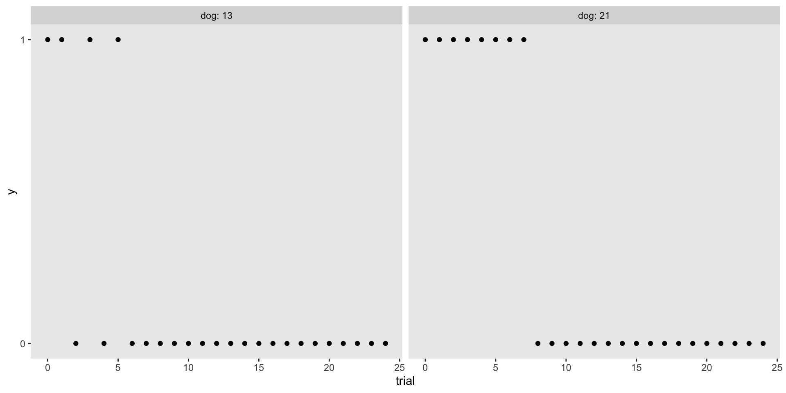
library(brms)
growth.log <-
brm(data = dogs,
family = bernoulli,
y ~ 0 + Intercept + trial + (1 + trial | dog),
prior = c(prior(normal(-2, 1), class = b, coef = Intercept),
prior(normal(0.25, 0.25), class = b),
prior(exponential(1), class = sd),
prior(lkj(4), class = cor)),
iter = 2000, warmup = 1000, cores = 3, chains = 3,
seed = 6,
backend = "cmdstanr",
file = "growth.log") Family: bernoulli
Links: mu = logit
Formula: y ~ 0 + Intercept + trial + (1 + trial | dog)
Data: dogs (Number of observations: 750)
Draws: 3 chains, each with iter = 2000; warmup = 1000; thin = 1;
total post-warmup draws = 3000
Multilevel Hyperparameters:
~dog (Number of levels: 30)
Estimate Est.Error l-95% CI u-95% CI Rhat Bulk_ESS
sd(Intercept) 0.36 0.24 0.01 0.89 1.00 825
sd(trial) 0.07 0.03 0.02 0.13 1.00 528
cor(Intercept,trial) -0.03 0.33 -0.63 0.62 1.00 1059
Tail_ESS
sd(Intercept) 1355
sd(trial) 564
cor(Intercept,trial) 1805
Regression Coefficients:
Estimate Est.Error l-95% CI u-95% CI Rhat Bulk_ESS Tail_ESS
Intercept 2.07 0.22 1.65 2.51 1.00 2809 1895
trial -0.32 0.03 -0.38 -0.27 1.00 2206 1943
Draws were sampled using sample(hmc). For each parameter, Bulk_ESS
and Tail_ESS are effective sample size measures, and Rhat is the potential
scale reduction factor on split chains (at convergence, Rhat = 1).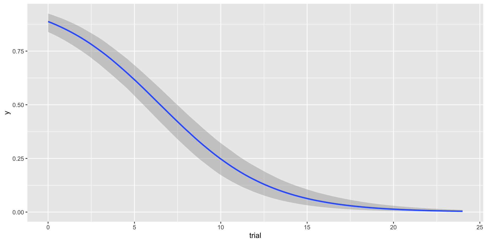
Previous example had DVs that constrained the likelihood function and thus necessitated fitting a logistic growth model. You can fit any type of model this way eg a count growth curve.
But what if your theorized form of the curve was ogive (S) shaped rather than the data? Eg You learn a new skill quickly at first, but improvements become marginally smaller as you approach “mastery”
Standard linear growth models are dumb about boundaries. They will predict you can increase past levels that make sense (eg byond the scale)
The probability that an unfamiliar listener understands what a child says, develops from age 3 to age 8. Example pulled from T.J. Mahr’s website
Proportions, bounded by 0 - 1. Nonlinear in that they are going to be logistic shaped.
Code
library(tidyverse)
points <- tibble(
age = c(38, 45, 52, 61, 80, 74),
prop = c(0.146, 0.241, 0.571, 0.745, 0.843, 0.738))
colors <- list(
data = "#41414550",
fit = "#414145")
ggplot(points) +
aes(x = age, y = prop) +
geom_point(size = 3.5, color = colors$data) +
scale_x_continuous(
name = "Age in months",
limits = c(0, 96),
breaks = scales::extended_breaks(Q = c(24, 12))) +
scale_y_continuous(
name = "Intelligibility",
limits = c(0, NA),
labels = scales::percent_format(accuracy = 1))
Code
xs <- seq(0, 96, length.out = 80)
trend <- tibble(
age = xs,
asymptote = .8,
scale = .2,
midpoint = 48,
prop = asymptote / (1 + exp((midpoint - age) * scale)))
ggplot(points) +
aes(x = age, y = prop) +
geom_line(data = trend, color = colors$fit) +
geom_point(size = 3.5, color = colors$data) +
scale_x_continuous(
name = "Age in months",
limits = c(0, 96),
breaks = scales::extended_breaks(Q = c(24, 12))) +
scale_y_continuous(
name = "Intelligibility",
limits = c(0, NA),
labels = scales::percent_format(accuracy = 1))
Code
colors$asym <- "#E7552C"
colors$mid <- "#3B7B9E"
colors$scale <- "#1FA35C"
p <- ggplot(points) +
aes(x = age, y = prop) +
annotate(
"segment",
color = colors$mid,
x = 48, xend = 48,
y = 0, yend = .4,
linetype = "dashed") +
annotate(
"segment",
color = colors$asym,
x = 20, xend = Inf,
y = .8, yend = .8,
linetype = "dashed") +
geom_line(data = trend, size = 1, color = colors$fit) +
geom_point(size = 3.5, color = colors$data) +
annotate(
"text",
label = "growth plateaus at asymptote",
x = 20, y = .84,
# horizontal justification = 0 sets x position to left edge of text
hjust = 0,
color = colors$asym) +
annotate(
"text",
label = "growth steepest at midpoint",
x = 49, y = .05,
hjust = 0,
color = colors$mid) +
scale_x_continuous(
name = "Age in months",
limits = c(0, 96),
breaks = scales::extended_breaks(Q = c(24, 12))) +
scale_y_continuous(
name = "Intelligibility",
limits = c(0, NA),
labels = scales::percent_format(accuracy = 1))
p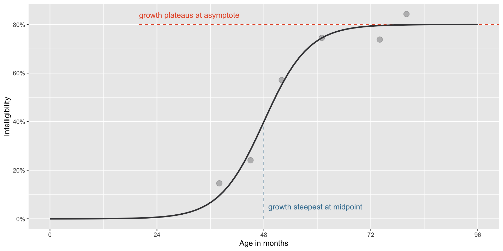
Logistic function from before: \[P(Y=1) = \frac{1}{1 + e^{-b_0 + b_1X}}\]
Same function, but the max is now asymptote rather than 1.
\[f(t) = \frac{\text{asymptote}}{1 + e^{((\text{mid}~-~t)~*~\text{scale})}}\] Scale is the slope, much like B1. t is our predictor. We use midpoint to mark where curve is centered. (For the IRT folk, mid and scale are basically our discrimination and difficulty parameters)
Code
annotate_eq <- function(label, ...) {
annotate("text", x = 0, y = .6, label = label, parse = TRUE,
hjust = 0, size = 4, ...)
}
slope <- (.2 / 4) * .8
x_step <- 2.5
y1 <- .4 + slope * -x_step
y2 <- .4 + slope * x_step
p <- p +
geom_segment(
x = 48 - x_step, xend = 48 + x_step,
y = y1, yend = y2,
size = 1.2,
color = colors$scale,
arrow = arrow(ends = "both", length = unit(.1, "in"))) +
annotate(
"text",
label = "scale controls slope of curve",
x = 49, y = .38,
color = colors$scale, hjust = 0)
# p + annotate_eq(
# label = "f(t)==frac(asymptote, 1 + exp((mid-t)%*%scale))",
# color = colors$fit)
p1 <- p +
annotate_eq(
label = "
f(t) == frac(
phantom(asymptote),
1 + exp((phantom(mid) - t) %*% phantom(scale))
)",
color = colors$fit)
p2 <- p1 +
annotate_eq(
label = "
phantom(f(t) == symbol('')) ~ atop(
asymptote,
phantom(1 + exp((mid-t) %*% scale))
)",
color = colors$asym)
p2 +
annotate_eq(
label = "
phantom(f(t) == symbol('')) ~ atop(
phantom(asymptote),
phantom(1 + exp((mid-t) * symbol(''))) ~ scale
)",
color = colors$scale) +
annotate_eq(
label = "
phantom(f(t) == symbol('')) ~ atop(
phantom(asymptote),
paste(
phantom(paste(1 + exp, symbol(')'), symbol(')'))),
mid,
phantom(paste(symbol('-'), t, symbol(')') * scale))
)
)",
color = colors$mid)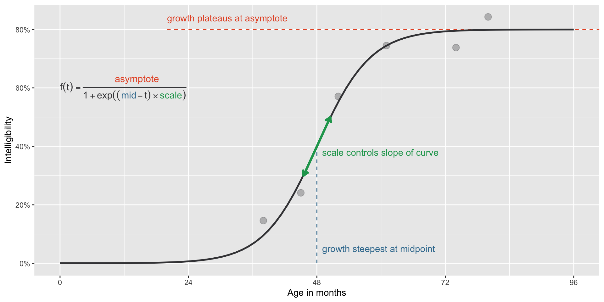
Code
library(brms)
data <- tibble(
age = c(38, 45, 52, 61, 80, 74),
prop = c(0.146, 0.241, 0.571, 0.745, 0.843, 0.738)
)
inv_logit <- function(x) 1 / (1 + exp(-x))
model_formula <- bf(
prop ~ inv_logit(asymlogit) * inv(1 + exp((mid - age) * exp(scale))),
asymlogit ~ 1,
mid ~ 1,
scale ~ 1,
phi ~ 1,
nl = TRUE,
family = Beta(link = identity) ## beta because proportion as DV
)
prior_fixef <- c(
# Point of steepest growth is age 4 plus/minus 2 years
prior(normal(48, 12), nlpar = "mid", coef = "Intercept"),
prior(normal(1.25, .75), nlpar = "asymlogit", coef = "Intercept"),
prior(normal(-2, 1), nlpar = "scale", coef = "Intercept")
)
prior_phi <- c(
prior(normal(2, 1), dpar = "phi", class = "Intercept")
)
fit <- brm(
model_formula,
data = data,
prior = c(prior_fixef, prior_phi),
iter = 2000,
chains = 4,
cores = 1,
control = list(adapt_delta = 0.9, max_treedepth = 15),
seed = 20211014,
file = "glm_growth_curve",
backend = "cmdstanr",
refresh = 0
)
draws_posterior <- data %>%
tidyr::expand(age = 0:100) %>%
tidybayes::add_epred_draws(fit, ndraws = 100) Family: beta
Links: mu = identity; phi = log
Formula: prop ~ inv_logit(asymlogit) * inv(1 + exp((mid - age) * exp(scale)))
asymlogit ~ 1
mid ~ 1
scale ~ 1
phi ~ 1
Data: data (Number of observations: 6)
Draws: 4 chains, each with iter = 2000; warmup = 1000; thin = 1;
total post-warmup draws = 4000
Regression Coefficients:
Estimate Est.Error l-95% CI u-95% CI Rhat Bulk_ESS Tail_ESS
phi_Intercept 2.96 0.72 1.54 4.34 1.00 1205 1870
asymlogit_Intercept 1.46 0.42 0.69 2.42 1.00 1884 1536
mid_Intercept 47.57 3.66 39.82 53.68 1.00 1350 1011
scale_Intercept -1.96 0.40 -2.85 -1.25 1.00 1476 1327
Draws were sampled using sample(hmc). For each parameter, Bulk_ESS
and Tail_ESS are effective sample size measures, and Rhat is the potential
scale reduction factor on split chains (at convergence, Rhat = 1).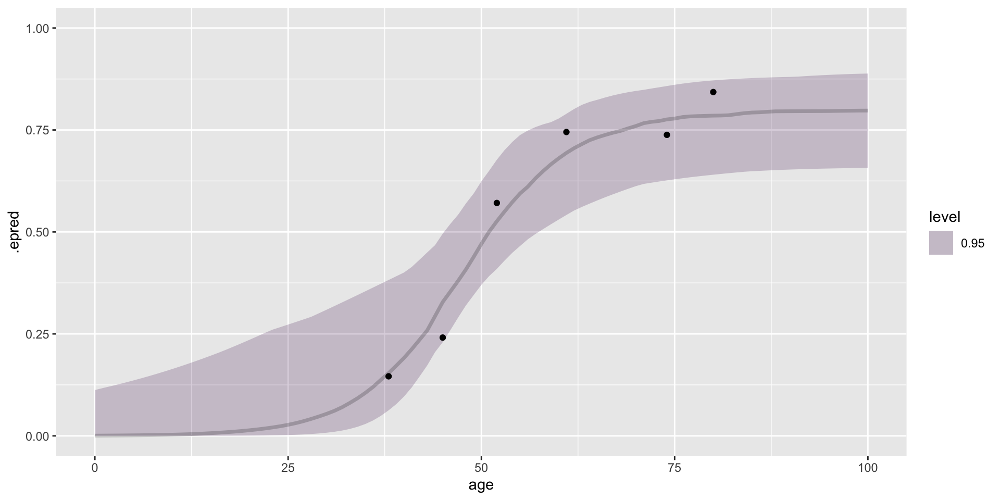
This example uses the beta likelihood function because the DV consists of bounded proportions (same likelihood you would use for standard regressions).
But you can fit a logistic curve to other likelihoods, again dependent on how your DV is generated. Count data: negative binomial or a poisson, continuous data: gaussian, likert or ordinal scales: cumulative.
Non-linear models
Standard GLM can be written this way, which reflects a linear combination \[ \eta_n = \sum_{i = 1}^K b_i x_{ni}\]
Nonlinear models cannot, such as: \[\eta_n = b_1 \exp(b_2 x_n)\]
- Many nonlinear functions exist, and can be used in standard regression. We can of course take these functions and apply them to longitudinal data.
We just saw a nonlinear growth model with the logistic function. But there are other functions that are similar to the standard logistic: - Gompertz Curve (accelerates quickly but slows down, inflection occurs earlier thant logistic) - Log-Logistic (aysmetrical S, assumes a “Heavy Tail”) - Von Bertalanffy (starts fast, no S)
Weibull Growth Model
Model failure rates over time.
\[ asym \left(1 - \exp\left(- \left( \frac{t}{\theta} \right)^\omega \right) \right)\]
Asym: Asymptote t: time \(\theta\): scale \(\omega\): shape of curve
AY dev cum premium
1 1991 6 357.848 10000
2 1991 18 1124.788 10000
3 1991 30 1735.330 10000
4 1991 42 2182.708 10000
5 1991 54 2745.596 10000
6 1991 66 3319.994 10000
7 1991 78 3466.336 10000
8 1991 90 3606.286 10000
9 1991 102 3833.515 10000
10 1991 114 3901.463 10000
11 1992 6 352.118 10400
12 1992 18 1236.139 10400
13 1992 30 2170.033 10400
14 1992 42 3353.322 10400
15 1992 54 3799.067 10400
16 1992 66 4120.063 10400
17 1992 78 4647.867 10400
18 1992 90 4914.039 10400
19 1992 102 5339.085 10400
20 1993 6 290.507 10800
21 1993 18 1292.306 10800
22 1993 30 2218.525 10800
23 1993 42 3235.179 10800
24 1993 54 3985.995 10800
25 1993 66 4132.918 10800
26 1993 78 4628.910 10800
27 1993 90 4909.315 10800
28 1994 6 310.608 11200
29 1994 18 1418.858 11200
30 1994 30 2195.047 11200
31 1994 42 3757.447 11200
32 1994 54 4029.929 11200
33 1994 66 4381.982 11200
34 1994 78 4588.268 11200
35 1995 6 443.160 11600
36 1995 18 1136.350 11600
37 1995 30 2128.333 11600
38 1995 42 2897.821 11600
39 1995 54 3402.672 11600
40 1995 66 3873.311 11600
41 1996 6 396.132 12000
42 1996 18 1333.217 12000
43 1996 30 2180.715 12000
44 1996 42 2985.752 12000
45 1996 54 3691.712 12000
46 1997 6 440.832 12400
47 1997 18 1288.463 12400
48 1997 30 2419.861 12400
49 1997 42 3483.130 12400
50 1998 6 359.480 12800
51 1998 18 1421.128 12800
52 1998 30 2864.498 12800
53 1999 6 376.686 13200
54 1999 18 1363.294 13200
55 2000 6 344.014 13600Code
fit_loss <- brm(
bf(cum ~ ult * (1 - exp(-(dev/theta)^omega)),
ult ~ 1 + (1|AY), omega ~ 1, theta ~ 1,
nl = TRUE),
data = loss, family = gaussian(),
prior = c(
prior(normal(5000, 1000), nlpar = "ult"),
prior(normal(1, 2), nlpar = "omega"),
prior(normal(45, 10), nlpar = "theta")),
control = list(adapt_delta = 0.9),
backend = "cmdstanr",
file = "loss")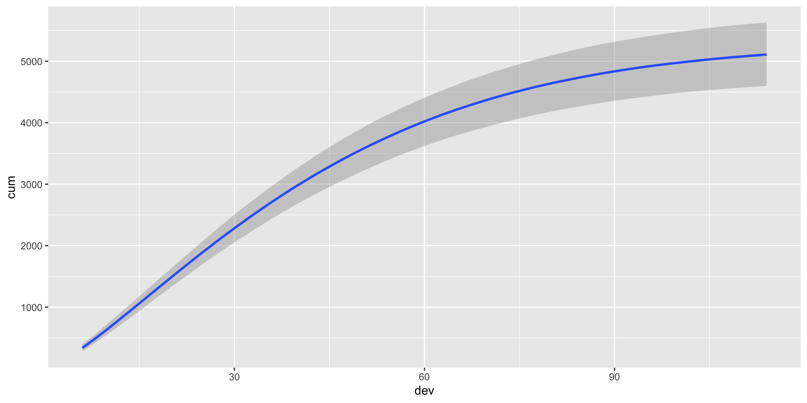
Family: gaussian
Links: mu = identity; sigma = identity
Formula: cum ~ ult * (1 - exp(-(dev/theta)^omega))
ult ~ 1 + (1 | AY)
omega ~ 1
theta ~ 1
Data: loss (Number of observations: 55)
Draws: 4 chains, each with iter = 2000; warmup = 1000; thin = 1;
total post-warmup draws = 4000
Multilevel Hyperparameters:
~AY (Number of levels: 10)
Estimate Est.Error l-95% CI u-95% CI Rhat Bulk_ESS Tail_ESS
sd(ult_Intercept) 741.56 224.80 425.72 1300.56 1.00 1265 2244
Regression Coefficients:
Estimate Est.Error l-95% CI u-95% CI Rhat Bulk_ESS Tail_ESS
ult_Intercept 5305.50 295.51 4733.58 5897.96 1.00 949 1618
omega_Intercept 1.34 0.05 1.24 1.43 1.00 2378 2362
theta_Intercept 46.27 2.18 42.48 50.96 1.00 2317 1948
Further Distributional Parameters:
Estimate Est.Error l-95% CI u-95% CI Rhat Bulk_ESS Tail_ESS
sigma 140.35 15.36 113.80 173.25 1.00 2757 2449
Draws were sampled using sample(hmc). For each parameter, Bulk_ESS
and Tail_ESS are effective sample size measures, and Rhat is the potential
scale reduction factor on split chains (at convergence, Rhat = 1).Exponential family of growth curves
Outside the sigmodal, S-shape family, the exponential family or J shaped curve is among the most popular.
- No Inflection Point, starts fast.
Negative Exponential Growth Curve
\[Y_{ij} = \underbrace{a_j}_{\text{Max}} - \underbrace{(a_j - b_j)}_{\text{Total Gap}} \times \underbrace{e^{-c_j \cdot \text{time}}}_{\text{Decay Rate}}\]
Wright & Jackson, 2022 JPSP
\[Y_{ti}=\ a_i-\left(a_i-\ b_i\right)\ast e^{\left(-c_i*{time}_{ti}\right)}\ \] \[b_i=\ \gamma_{b}+\ U_{b{i}}\] \[c_j=\ \gamma_{c0}+\ U_{cj}\] \(b_i\) can be thought of as the intercept, whereas \(c_i\) is the slope. \(a_i\) is maximum possible value
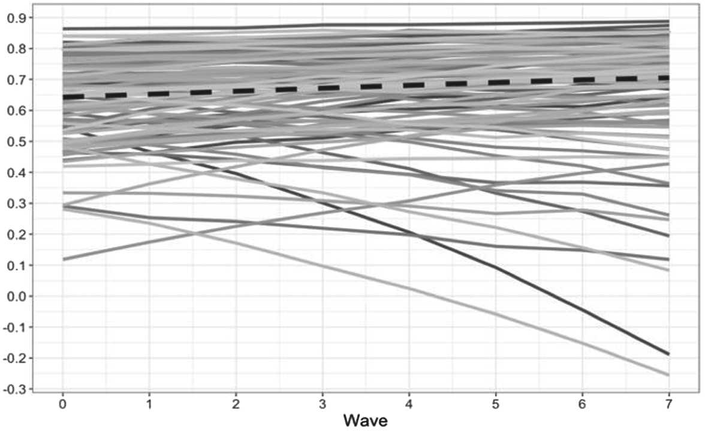